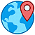
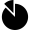
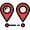
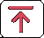

вращение - левой клавишей мыши
перемещение - правой клавишей
приблизить/удалить - колёсико мыши
изменить масштаб по высоте - ползунок в левом верхнем углу экрана
На мобильных устройствах старайтесь не использовать встроенный обозреватель
Проверенный результат - на Google Chrome
Программа визуализации геоданных
1. Зона видимости из определённой точки и высоты.
2. Панорама горизонта
3. График высот по направлению
4. Карта высот с указанием наиболее низкой и высокой точек
5. Карта теней
6. График высот вдоль полилинии
После открытия страницы программа должна загрузить карту исходя из Вашей текущей дислокации,
если не удаётся определить местоположение - где-то в Альпах
Если перешли на сайт по ссылке с предустановленными координатами - откроет по ним, сразу загрузив данные.
После этого метоположение можно поменять либо в ручном режиме, перемещая карту зажатой левой клавишей мыши,
либо задать кординаты широты/долготы или адрес, нажав вкладку  слева
Для получения данных нажмите 
Появится рваный оранжевый слой, представляющий собой поверхность, видимую из точки Глаза.
Закрашенные области - зоны видимости. То, что не закрашено - укрыто от взора: за препятствием, в низине или за горизонтом.
Можно менять местоположение точки наблюдения, перетаскивая мышкой Глаз.
Высота наблюдателя изменяется ползунком слева от
Индикаторы

H - высота поверхности под курсором (указывается в измеренных областях)
D - расстояние от точки наблюдателя  до положения курсора
до положения курсора
A - азимут от точки наблюдателя до положения курсора
LAT - широта
LNG - долгота
Можно задать новые области измерения или увеличить точность, изменив масштаб карты
и нажав после этого

В правом верхнем углу появится прямоугольник.
Перемещайте его мышкой, зелёный и красный текстовые маркеры указывают минимальную и максимальную высоту
для области, ограниченной прямоугольником.
 Задание параметров
Задание параметров
Угловая точность  - ширина сектора расчёта.
Количество точек итерации  - чем больше значение, тем больше точность.
Но - при низком быстродействии компьютера картинка будет тормозить.
Прозрачность фона и цветовое меню - для зоны видимости.
Изменяйте, если цвет самой карты сливается с наложением
 Панорама горизонта
Панорама горизонта
Для получения более детальной картинки надо уменьшить Угловую точность (см. выше)
или получить для данной позиции и высоты максимальное разрешение, нажав кнопку Max
в правом нижнем углу экрана.
Там же можно изменить сектор обзора
Слева от панорамы указаны максимальный и минимальный углы видимости.
При равнинной местности картинка будет сильнее отличаться от реальной.
 График высот
Зелёная вертикальная полоса указывает точку горизонта
График высот
Зелёная вертикальная полоса указывает точку горизонта

Топография. Чем бледнее/зеленее слой, тем меньше высота. Краснее - больше.
Указаны точки с максимальной и минимальной измеренными высотами.
Интенсивность наложенных слоёв меняется ползунком Opacity в открывшемся меню.
Для удаления слоя нажмите ещё раз
 Тень
Тень
Ползунок слева внизу - время. От Рассвета до Заката.
Правее - задание даты.
Поясное время определяется по географическим координнатам, поэтому может отличаться от реального.
Сдвиг от Гринвича указан после GMT
 График высот вдоль ломаной линии.
График высот вдоль ломаной линии.
Задайте начало линии, кликнув левой клавишей мыши. Добавляйте точки.
Завершение построения линии - правая клавиша мыши.
Линию можно редактировать, растягивая за вершины.
Пример. Розовым - зона видимости. Серым - тени. Красная линия - направление от солнца

Можно скопировать и сохранить ссылку в адресной строке браузера (полностью всё строку !).
В дальнейшем при переходе по этой ссылке карта откроется в сохранённой позиции.
Ctrl-M в режиме 2D откроет вкладку с картой в графическом виде.
Можно скопировать и сохранить (Правая клавиша мыши - Сохранить картинку)
УСЛОВИЕ - вкладка whatthepeak в браузере должна быть КРАЙНЕЙ ПРАВОЙ
Ctrl-I откроет вкладку с OBJ-кодом, для 3D модели.
E-адрес